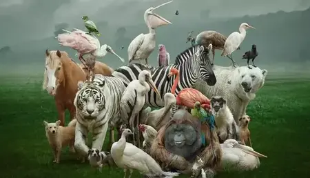
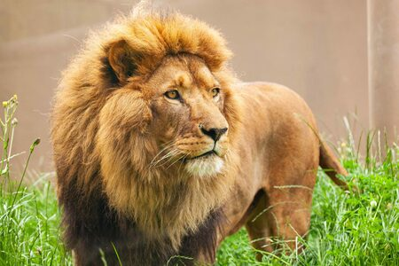
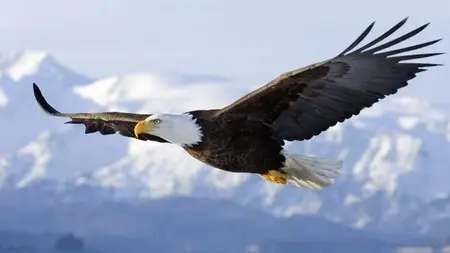
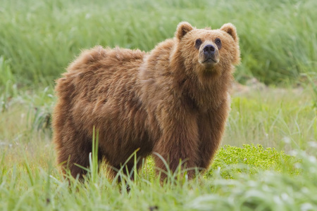

Hayvanlar

Hayvan, canlılar dünyasının ökaryotlar (Eukaryota) üst âlemindeki hayvanlar (Animalia) âleminde sınıflanan canlıların ortak adıdır.
Arapça "canlı varlık" anlamındaki ḥayevān sözcüğünden Türkçeye geçmiş olan "hayvan"sözcüğü, günlük kullanımda esasen insan dışı,
nefes alan ve hareket eden canlıları ifade etmek için kullanılsa da, biyolojik bağlamda insanı da içerir
Anadolu ağızlarında hayvan anlamında bav, bobos, böçü, çer, çokgal, dölük, evcimen, evlük, karaböcü, karaltı, medek, tereke,
töm gibi sözcükler kullanılmaktadır.Hayvan sözcüğünün eş anlamlısı döngül sözcüğüdür.Hayvanlar âleminin bilimsel ve
Latince adı olan "Animalia" terimi ise yine Latince olan ve "yaşayan" ya da "ruh" anlamına gelen animadan türetilmiş
animal sözcüğünün çoğuludur.Hayvanlar âlemini tanımlayan bir başka Yunanca bilimsel terim de Metazoa'dır.
Genellikle çevrelerine uyum sağlayan ve diğer canlılarla beslenen çok hücreliler âlemidir.
Vücutları, embriyonun bazı metamorfozlar geçirmesiyle gelişir. Ökaryotik çok hücreli organizmalardır.
Besinlerini genel olarak sindirerek alırlar. Hayvanların birçoğu hareketlidir ve bitkilerde tipik olan bulunan
kalın hücre duvarları genellikle yoktur.
Embriyonik gelişim esnasında büyük ölçülerde hücresel göçler ve doku organizasyonları görülür. Üremeleri primer (birincil) olarak seksüeldir;
diploit kromozom taşıyan dişi ve erkekler mayozla haploit kromozomlu gametleri, bunlar da birleşerek diploit zigotu oluşturur.
Yaklaşık 1 milyonu böcek olmak üzere 1,5 milyondan fazla hayvan türü tanımlanmıştır, fakat tanımlanmamış olanlarla
birlikte 7 milyondan fazla hayvan türü olduğu tahmin edilmektedir.
Aslan

Aslanlar, Panthera leo türüne ait büyük ve güçlü etobur memelilerdir. Bu muhteşem hayvanlar, Afrika'nın bazı bölgelerinde ve Hindistan'ın bir kısmında yaşarlar.
Aslanlar, vücut yapıları ve karakteristik özellikleriyle dikkat çeken birçok ilgi çekici özelliğe sahiptir. Aslanların erkekleri dişilerinden daha büyük olurlar
ve karakteristik bir baş yapıları vardır. Erişkin bir aslanın boyu genellikle 1,2 ila 1,8 metre arasında ve omuz yüksekliği ise yaklaşık 1 metre civarındadır.
Erkeklerin ağırlığı 150 ila 250 kilogram arasında değişebilirken, dişilerin ağırlığı 120 ila 182 kilogram arasında olabilir. Ancak bazı büyük erkek aslanlar,
250 kilogramı aşan ağırlıklara sahip olabilir.Aslanların ünlü yeleleri, erkeklerin boyunlarında ve omuzlarında bulunur. Yele, aslanın gücünü ve erkeklik göste-
rgesini temsil eder. Yele, her aslanda farklı olabilir ve genellikle yaşa, genetik faktörlere ve beslenmeye bağlı olarak değişiklik gösterebilir.Aslanlar,
sosyal hayvanlardır ve genellikle aile grupları halinde yaşarlar. Bir grup aslana "sürü" veya "başak" denir. Bir sürü genellikle birkaç dişi, bir veya birkaç
erkek ve onların yavrularından oluşur. Dişiler, sürüdeki liderlik rollerini genellikle üstlenirken, erkekler sürüyü korumak ve avlanmak için görev alır.
Bu muhteşem yaratıklar, avlanma konusunda oldukça yeteneklidir. Aslanlar, genellikle büyük ve orta büyüklükteki memelileri avlarlar, ancak av seçimi yerel olarak değişebilir.
Aslanlar, sürü halinde çalışarak stratejik avlanma yöntemlerini kullanırlar. Genellikle gece avlanan aslanlar, karanlıkta daha etkili bir şekilde avlarını takip edebilirler.
Aslanlar, ekosistemde önemli bir role sahiptir. Av popülasyonlarını kontrol ederek ekosistemin dengesini sağlarlar. Bunun yanı sıra, turizmde ve doğal yaşam koruma çabalarında da
önemli bir etkiye sahiptirler. Ne yazık ki, aslanlar doğal yaşam alanlarının azalması, av kaynaklarının azalması ve avcılık nedeniyle tehdit altındadır.
Uluslararası Doğa Koruma Birliği (IUCN), aslanları "savunmasız" olarak sınıflandırmaktadır ve koruma çabaları büyük önem taşımaktadır.
Kartal

Kartallar, Accipitridae familyasına ait büyük, güçlü ve etkileyici bir kuş türüdür. Bu kuşlar, genellikle geniş kanat açıklığı, güçlü gagaları ve keskin
pençeleriyle tanınır. Kartallar, dünyanın çeşitli bölgelerinde bulunabilir, ancak en yaygın olarak Kuzey Amerika, Avrupa, Asya ve Afrika'da görülür.
Kartalların en tanınabilir özelliklerinden biri, büyük boyutları ve etkileyici kanat açıklığıdır. Erişkin bir kartalın kanat açıklığı genellikle
1,8 ila 2,5 metre arasında değişir. Bu, onlara güçlü bir uçuş kabiliyeti sağlar ve geniş alanları avlanmak için tarayabilirler. Kartallar, çoğunlukla
balık, kuşlar ve memeliler gibi etobur hayvanlarla beslenir. Su kuşlarından su kenarındaki avlara kadar çeşitli avlarla beslenirler. Kartallar, yüksekten
uçarak avlarını tespit eder ve keskin gözleriyle avlarını hassas bir şekilde gözlemleyebilirler. Ardından hızlı bir dalışla avlarını yakalar ve güçlü
pençeleriyle tutarlar. Bir diğer önemli özellikleri ise uzun ömürleridir. Bazı kartal türleri, doğal yaşam alanı ve beslenme koşullarına bağlı olarak
20 ila 30 yıl arasında yaşayabilir. Hatta bazı kayıtlarda 50 yıldan daha uzun süren yaşam süreleri görülmüştür. Kartallar genellikle yüksek tepelerde,
ormanlarda veya sahil bölgelerinde yuva yaparlar. Yuvalarını genellikle büyük ağaçlarda veya kayalık kaya oluşumlarında inşa ederler. Yıllarca aynı
yuvayı kullanabilirler ve her yıl üzerine yeni dallar ve malzemeler ekleyerek yuvalarını güçlendirirler. Kartallar, sembolik öneme sahip olmalarıyla da
tanınır. Birçok ülkenin bayraklarında veya armalarında yer alır ve özgürlük, güç, cesaret ve bağımsızlık gibi değerlerin sembolü olarak kabul edilirler.
Kartallar, çevresel faktörler, habitat kaybı ve kirlilik gibi tehditlerle karşı karşıyadır. Bazı kartal türleri nesli tükenme tehlikesiyle karşı karşıyadır ve
koruma çabaları büyük önem taşır. Birçok ülke, kartalları korumak için yasal düzenlemeler ve doğal yaşam alanlarını koruma projeleri geliştirmiştir.
Ayı

Ayılar, Ursidae familyasına ait büyük, güçlü ve otçul-etçil memelilerdir. Dünya genelinde farklı türleri bulunur ve kara ayıları, boz ayılar, kutup ayıları gibi farklı alt türler mevcuttur.
Ayılar, çeşitli yaşam alanlarında bulunabilirler, örneğin ormanlar, dağlar, tundralar ve bazı bölgelerde kutup bölgeleri.Ayıların boyutları türlerine ve alt türlere bağlı olarak değişebilir.
Örneğin, boz ayılar genellikle daha büyük boyutlara sahiptirken, kutup ayıları da oldukça büyük ve ağırdır. Ayıların boyu ve ağırlığı, yaşa, cinsiyete ve yaşadıkları bölgeye bağlı olarak da değişiklik
gösterebilir. Ayıların güçlü vücutları ve keskin pençeleri vardır. Bu özellikler, hem avlanmak hem de kendilerini savunmak için kullanırlar. Ayılar, genellikle otçul beslenirken, bazı türler
etobur veya her ikisini de yapabilir. Balıklar, meyveler, otlar, böcekler, küçük memeliler ve hatta bazı türler için balinalar gibi çeşitli yiyeceklerle beslenirler. Ayılar genellikle tek başına
yaşarlar, ancak bazı türlerde anneler ve yavrular arasında yakın ilişkiler görülür. Dişiler, yavrularını birkaç yıl boyunca korur ve yetiştirir. Ayı yavruları genellikle annelerinden çeşitli
becerileri öğrenirler ve büyümeleri için annelerine bağımlıdırlar. Ayılar, çevresel faktörler, habitat kaybı, avlanma ve insan etkisi gibi tehditlerle karşı karşıyadır. İnsanlarla yaşadıkları
alanların yakınlarına gelmeleri bazen çatışmalara neden olabilir. Ancak, birçok ülkede ayıları korumak için çeşitli tedbirler ve koruma programları uygulanmaktadır.
Ayılar, ekosistemde önemli bir role sahiptir. Tohumların dağılmasına yardımcı olurlar, böcek ve kemirgen popülasyonlarını kontrol ederler ve vahşi yaşam çeşitliliğine katkıda bulunurlar.